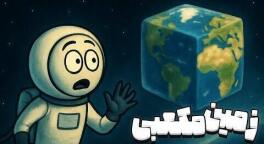

اگر زمین از اول مکعب بود چه میشد؟

زمین گرد است. این را قبول داریم. حالا فرض کن نیست. فرض کن یک مکعب است. همین. یک جعبهٔ غولپیکر در فضا. سؤال این نیست که این کار ممکن بود یا نه. سؤال این است اگر زمین از اول مکعبی بود، نه کروی، چه میشد.
جاذبه دیگر صاف پایین نمیکشد
اولین چیزی که بعد از شنیدن این سؤال آدم را حسابی گیج میکند، نیروی جاذبه است. روی زمین کروی خودمان فرقی نمیکند کجای سیاره باشی. جاذبه همیشه مستقیم به سمت مرکز زمین میکشاندت. مثل یک چسب نامرئی که همیشه عمود به سطح میچسبد. ولی مکعب چه؟
فرض کن وسط یکی از وجههای مکعب ایستادهای. اینجا جاذبه تقریباً مثل زمین کروی عمل میکند. مستقیم به پایین، عمود به سطح وجه. ولی حالا آرامآرام شروع کن به راه رفتن به سمت لبههای آن وجه. هرچه نزدیکتر میشوی یک حس عجیب به تو دست میدهد. انگار داری از یک شیب نامرئی بالا میروی. واقعیتش هم همین است. جاذبه دیگر آن کشش عمودی همیشگی را ندارد. کمکم مایل میشود و تو را به سمت مرکز وجه میکشد. انگار زمین زیر پایت دارد کج میشود و تو را هل میدهد عقب.
هرچه به لبه نزدیکتر شوی این شیب نامرئی تندتر میشود. آنقدر تند که عملاً تبدیل به یک کوهنوردی سخت و طاقتفرسا میشود. افق روبهرویت شاید هنوز صاف و تخت به نظر برسد، ولی بدنت حس میکند از یک تپهٔ خیلی بزرگ بالا میرود.
فقط جهت جاذبه نیست که عوض میشود. شدت جاذبه هم فرق میکند. وقتی از مرکز یک وجه به سمت گوشهها میروی، از مرکز جرم سیاره دورتر میشوی و جاذبه ضعیفتر میشود. حسابها نشان میدهد در یک زمین مکعبی که جرمش با زمین خودمان یکی است، شتاب گرانش در مرکز هر وجه تقریباً ۱ گرم است، همان جاذبهٔ معمولی. ولی در هر گوشه فقط حدود ۰٫۶۴ گرم میشود. یعنی اگر در مرکز وجه ۱۰۰ کیلو وزن داشته باشی، در گوشهها فقط حدود ۶۴ کیلو وزن داری. تقریباً یکسوم وزنت کم میشود.
شاید اولش باحال به نظر برسد. کی بدش میآید یککم سبکتر شود؟ ولی صبر کن. این سبک شدن در لبههای دنیا بهایی دارد. هرچه جاذبه ضعیفتر شود، نگه داشتن هوا سختتر میشود. آنقدر سخت که در آن بلندی دیگر نه اکسیژنی برای نفس کشیدن پیدا میشود، نه آبی برای نوشیدن.
شش گنبد هوا
جاذبه در مرکز وجهها قویتر است و هرچه به لبهها و گوشهها برویم ضعیفتر میشود. هوا مثل بقیهٔ چیزها به سمت جاهایی کشیده میشود که جاذبه قویتر است. یعنی هوا در مرکز هر وجه جمع میشود و یک جور گنبد هوا بالای هر وجه درست میشود. هوای نزدیک لبهها خیلی رقیق میشود. آنقدر رقیق که تقریباً به خلأ نزدیک است. فشار هوا در حاشیهها خیلی پایین میآید و تنفس در این نواحی خیلی سخت میشود، اگر اصلاً بشود نفس کشید.
توزیع جو روی آبوهوا هم اثر زیاد دارد. فرض کن محور چرخش از وسط دو تا از وجهها رد شود. در این حالت مناطق مرکزی هر وجه نور خورشید بیشتری میگیرند و گرمتر میشوند. گوشهها که هوای رقیقتری دارند و نور کمتری میگیرند، خشک و سرد میمانند. اگر محور از یک گوشه به گوشهٔ دیگر برود، هر وجه متعادلتر نور میگیرد، ولی مشکل رقیق بودن جو در لبهها پابرجاست. گوشههای تیز مکعب، چون پوشش جوی ندارند، خیلی سرد و غیرقابلسکونت میشوند. یک جور قطب زمین کروی، ولی خیلی خیلی سرد.
مکعب چطور دور خودش میچرخد؟
اینکه هر کدام از آن شش دیوار چقدر و چطور نور خورشید بگیرند، دقیقاً بستگی دارد به اینکه این مکعب گردنکلفت چطور دور خودش بچرخد. چند حالت اصلی دارد.
حالت اول، چرخش مثل سیخ کباب از وسط دو صفحه. تصور کن یک سیخ را صاف از وسط یکی از وجهها فرو کنی و از وسط وجه روبهرو دربیاوری. حالا مکعب را حول این سیخ بچرخانی، مثل جوجهگردان. آن دو وجهی که سیخ ازشان رد شده، مثلاً بالا و پایین، مثل قطبهای زمین کروی میشوند. یا همیشه روزند، یا همیشه شب، بسته به زاویه با خورشید، یا یک گرگومیش دائمی دارند و نور خیلی مایل بهشان میتابد و یخ میزنند. آن چهار وجه دیگر که دور این محور میچرخند، مثل خط استوا و مناطق معتدل، به نوبت رو به خورشید میشوند. روز و شب عادی دارند. پس فقط چهار وجه روز و شب درستوحسابی دارند. آن دو تای دیگر یا در تاریکی مطلقاند یا نور کجوکولهٔ کمی میگیرند.
حتی روی همان وجههایی که نور میگیرند، مرکز وجه که صاف رو به خورشید است داغ میشود، ولی لبهها و گوشهها که نور مایل میگیرند و جو نازکی دارند سرد و خشک میمانند.
حالت دوم، چرخش دیوانهوار از گوشه به گوشه. سیخ را از یک گوشه فرو کنی و از گوشهٔ دقیقاً مقابل، آن سر قطر مکعب، دربیاوری. این دیگر مثل تاس انداختن است. مکعب یک چرخش کجوکوله دارد و لنگ میزند. هیچ وجهی دقیقاً مثل قطب ثابت نمیماند. هر شش وجه در طول چرخش، به نوبت و با زاویههای مختلف، یک مقدار رو به خورشید قرار میگیرند. انگار هر وجه تکههایی از روز و شب و طلوع و غروب را با هم تجربه میکند، ولی خیلی نامنظم. نور به طور متوسط بین وجهها متعادلتر پخش میشود، ولی یکسان نیست. در هر لحظه یک وجه ممکن است زیر نور مستقیم باشد و وجه دیگر تقریباً در سایه. گوشهها و لبهها، این مناطق نفرینشده، حتی اگر خورشید بالای سرشان باشد، چون جو درستوحسابی ندارند که گرما را نگه دارد، مثل فریزر میمانند.
حالت سوم این است که محور از وسط دو لبهٔ مقابل رد شود، یا اصلاً یک چرخش کاملاً نامنظم و قِلقِلخوران مثل یک تاس واقعی. فرقی نمیکند زمین مکعبی چطور بچرخد. هیچوقت هر شش وجه مثل هم و یکسان نور نمیگیرند. دلیل اصلی همان شکل مکعب و گوشههای تیزش است. گوشهها و لبهها همیشه نور کمتری میگیرند، تازه اگر بگیرند، و مهمتر از آن جو خیلی رقیقی دارند یا اصلاً ندارند. گرما را نگه نمیدارند و آنجا یخبندان میشود. مرکز وجهها میتواند داغ شود، ولی به سمت لبهها که بروی دما سقوط میکند.
طلوع مثل کلید برق
چرخهٔ شب و روز هم یک چیز دیگر است. با فرض حالت اول، طلوع خورشید را تصور کن. خورشید دیگر آرامآرام از پشت افق گرد بالا نمیآید. یکهو از یک لبهٔ تیز بیرون میآید و وجه را روشن میکند. انگار یک کلید برق را روشن کنی و یکدفعه همهجا روشن شود. ساکنان مرکز هر وجه یک چرخهٔ ۱۲ ساعت روشنایی و ۱۲ ساعت تاریکی را تجربه میکنند، مثل زمین خودمان. نزدیک لبهها روزها کوتاهتر و شبها طولانیتر میشود. شکل مکعب باعث میشود نور به طور یکسان به همهجا نرسد. انگار یک سایهٔ بزرگ همیشه روی لبهها افتاده.
شش اقیانوس مربعی
از نظر زمینشناسی، زمین مکعبی خیلی ناپایدارتر از زمین کروی است. گرانش کروی کمک میکند سیاره به شکل یک کرهٔ متعادل بماند. در شکل مکعبی فشار به سمت لبهها بیشتر میشود و احتمال ترک، آتشفشان و زمینلرزه خیلی زیاد میشود. شاید هر وجه یک صفحهٔ بزرگ باشد و لبهها تبدیل به رشتهکوههایی خیلی خیلی عظیم شوند، حتی بلندتر از هیمالیا.
یادت هست گفتیم جاذبه دیگر صاف به پایین نیست، بلکه میکشد سمت مرکز هر صفحه. همین قانون شکل اقیانوسها را به هم میریزد. آب مثل یک عالم تیله که ولشان کنی روی یک سینی صاف، قل میخورد و جمع میشود درست وسط هر کدام از آن شش دیوار. روی هر صفحهٔ غولپیکر یک اقیانوس مربعی عظیم درست وسطش جا خوش کرده. انگار یک استخر مربعی به وسعت یک قاره وسط یک بیابان بیانتها کنده باشند.
دور تا دور این اقیانوس مربعی چه داریم؟ خشکی مطلق. انگار یک دیوار نامرئی دور آب کشیدهاند و گفتهاند از این جلوتر نیا. لبههای مکعب، که حالا بلندترین نقاط سیاره شدهاند، خشک و سرد میمانند. شاید فقط در سایههای دائمی بعضی لبهها چند یخچال کوچک شکل بگیرد. وگرنه بیشترش سنگ و خاک یخزده و بیآبوعلف است.
این اقیانوسهای مربعی به هم راه دارند؟ جواب یک «نه» درشت است. چطور راه داشته باشند، وقتی بینشان دیوارهای بلند و خشک لبهها قرار گرفته و جاذبه هم هر کدام را میچسباند به مرکز صفحهٔ خودش. اینها رسماً شش آبگیر غولپیکر جدا از هماند. راستش را بخواهی شاید دیگر اصلاً نشود بهشان گفت اقیانوس. بیشتر شبیه شش دریاچهٔ فوقالعاده عظیم و مربعیاند که هر کدام در قلمرو خودشان حبس شدهاند. ولی چون خیلی بزرگاند، همان اقیانوس صدایشان میکنیم که عظمتشان برسد.
شش باغ جدا
این آبوهوای عجیب و این اقیانوسهای زندانی چه بلایی سر زندگی میآورند؟ معلوم است. بیشتر چیزهایی که برای زندگی لازم است، یعنی هوا و آب شیرین، همان جایی پیدا میشود که آب هست. دور و بر همان اقیانوسهای مربعی، در مرکز هر صفحه. آنجا، در آن منطقهٔ امن، شاید بشود چیزهای آشنا دید. جنگلهایی که مثل یک کمربند سبز دور آن دریاچهٔ مربعی مرکزی حلقه زدهاند. دشتهایی که رودهایشان تنبل و آرام از دامنههای پاییندست آن دیوارهای بلند خودشان را میرسانند به آب مرکزی.
اما امان از وقتی که از این مرکز امن فاصله بگیری و بخواهی بروی سمت لبهها. انگار یکهو از یک باغ سرسبز بروی به یک برهوت. هرچه نزدیکتر میشوی هوا رقیقتر، زمین خشکتر و سرما وحشیتر میشود. زندگی هم مثل شمعی که باد به آن بخورد کمرنگ و کمرنگتر میشود. شرایط آنجا دیگر شوخیبردار نیست. چیزی در مایههای قلههای ۸۰۰۰ متری زمین خودمان، یا حتی بدتر، شبیه سطح سیارهٔ مریخ. فقط سرسختترین موجودات میتوانند در آن مناطق نزدیک لبهها دوام بیاورند. شاید یک مشت خزه و گلسنگ سفت که به سنگ چسبیدهاند، یا یک سری باکتری که در سرما و خشکی حال میکنند. بقیهٔ گیاهها و جانورهایی که میشناسیم عمراً بتوانند در این برهوت یخزده و کمهوا دوام بیاورند.
نکتهٔ جالب این است که هر کدام از شش وجه عملاً یک زیستبوم تقریباً جدا میشود. ارتباط طبیعی بین این دنیاهای ششگانه خیلی سخت است. هیچ رودخانهای از یک جو به جو دیگر نمیرود. پرندهها هم احتمالاً انگیزهای ندارند به سمت ارتفاعات بدون هوا پرواز کنند. به خاطر همین ممکن است هر وجه یک مسیر تکامل مستقل داشته باشد. مثل جزیرههای دورافتادهٔ زمین که گیاه و جانور خاص خودشان را دارند. یک وجه که بیشتر سطحش اقیانوس مرکزی است شاید خانهٔ انواع آبزیان باشد. وجهی که خشکتر است میزبان جانوران بیابانی مقاومتر. این تفاوت میتواند شش مجموعهٔ زیستی کاملاً متفاوت روی یک سیاره بسازد.
لبهها، همان دیوارهای عظیمی که هر وجه را از هم جدا میکنند، عملاً تبادل زیستی را مسدود میکنند. انگار طبیعت خودش این شش باغ را محصور کرده که موجودات باغ کناری نتوانند بیایند تو. در این شرایط تنها راه ارتباط، تکنولوژی است. پرواز با هواپیما یا سفینه از روی لبه، یا حفر تونل از دل پوسته. آدمهای باهوش شاید به فکر تونل عمیق از زیر کوههای لبه بیفتند که دو وجه مجاور را به هم وصل کند. البته باید مطمئن شوند هوا در آن تونل جریان دارد و آن طرف هم بشود نفس کشید.
انسان مکعبی
حالا سؤال اصلی: انسانها چطور خودشان را با چنین دنیایی وفق میدادند؟ فرض کنیم زمین از اول مکعب بوده و ما هم رویش تکامل پیدا کردهایم. زندگی روزمره در بخشهای مرکزی هر وجه احتمالاً خیلی با زمین فعلی فرق نمیکرد. هوا داریم، آب داریم، زمین نسبتاً مسطح زیر پایمان پهن شده. شاید حتی هزاران سال طول میکشید تا بفهمیم سیارهمان مکعبی است. افق دوردست صاف به نظر میرسد و انحنایی هم دیده نمیشود. زمین فعلی هم آنقدر بزرگ است که انحنایش به سختی دیده میشود. انسانهای اولیه احتمالاً فکر میکردند دنیای خودشان یک سطح بیکران است، یا یک دشت خیلی خیلی بزرگ.
آنهایی که ماجراجوتر بودند، اگر به سمت لبهها سفر میکردند، کمکم متوجه میشدند دارند از یک شیب نامرئی عجیب بالا میروند و نفس کشیدن سختتر میشود. شاید در فرهنگهای باستانی افسانههایی شکل میگرفت دربارهٔ کوههای مقدس در انتهای دنیا، که هر کس بخواهد بالاتر از آنها برود نفسش بند میآید یا به قلمرو خدایان قدم میگذارد.
ولی انسانها موجودات کنجکاویاند. دیر یا زود وسوسه میشدند بدانند پشت آن دیوارهٔ بلند لبهٔ دنیا چه خبر است. سفر به لبهها با تکنولوژی ساده تقریباً ناممکن است. هوا رقیق و سرد میشود و بدون تجهیزات مدرن، صعود به بالای لبه مثل سفر به فضاست. شاید چند ماجراجوی جسور تلاش کنند آن ارتفاعات را فتح کنند، ولی مثل تلاش برای صعود به اورست در قرون وسطی، بیشترشان ناکام بمانند. فقط با پیشرفت علم، مثلاً دستگاه تنفسی، لباس فشار یا وسیلهٔ پرنده، بشر کمکم راز مکعبی زمین را کشف میکند.
تصور کن روزی را که یک بالن یا هواپیمای اولیه موفق شود خودش را به لبه برساند. یکهو منظرهای باورنکردنی جلوی چشم کاشفان ظاهر میشود. میبینند آنور کوههای لبه یک دنیای دیگر وجود دارد. یک سطح تخت بزرگ که در افق ادامه دارد. دارم دربارهٔ وجه همسایه حرف میزنم. این مثل کشف یک قارهٔ جدید نیست. انگار یک سیارهٔ تازه پیدا کردهاند که همیشه درست کنارشان بوده، ولی دور از دسترس. اولش باور سخت است که آسمان آن طرف کوه پایین آمده و دوباره به زمین وصل شده. برخورد تمدنهای دو وجه مختلف میتواند به اندازهٔ ملاقات دو سیارهٔ جدا جالب باشد.
با پیشرفت تکنولوژی، راههایی برای رد شدن از مرز ترسناک لبهها پیدا میشود. شاید آسانسورهای فشار قوی که آدمها را به بالای لبه ببرند، یا تونلهای عمیقی که دو وجه را از زیر زمین به هم وصل کنند. حتی ممکن است سفرهای فضایی کوتاه بین وجهها رایج شود. یک موشک از یک وجه بلند شود، چند دقیقه در خلأ حرکت کند و روی وجه مجاور فرود بیاید. بالاخره کنجکاوی راهی به آنور کوهها باز میکند.
یکی از ماجراجویانهترین کارها این است که خودت را به رأس یک گوشه برسانی. جایی که سه وجه به هم میرسند. تصور کن آنجا بایستی و یک پا را روی یک وجه بگذاری و پای دیگر را روی وجه عمود به آن. همزمان روی دو وجه مختلف زمین ایستادهای و نصف سیاره، شاید نصف آسمان، زیر پایت است. چنین آدمی عملاً بالای جهان ایستاده و سرش در فضای بیرون جو است. البته بدون سفینه و لباس فضایی ممکن نیست، ولی ثبت چنین رکوردی در تاریخ بشر خیلی جالب خواهد بود.
از نظر سازگاری جسمی، شاید انسانها در طول نسلها کمکم به ارتفاعات بالاتر نزدیک لبهها عادت کنند. با این حال بیشتر جمعیت احتمالاً در مناطق پستتر ساکن میشوند. همان مرکز وجهها، جایی که هوا و آب و جاذبه مناسبتر است.
این هم از سناریوی زمین مکعبی. شش باغ، شش دریا، و گوشههایی که آسمان را لمس میکنند. تا فکر بعدی، کنجکاو بمان.